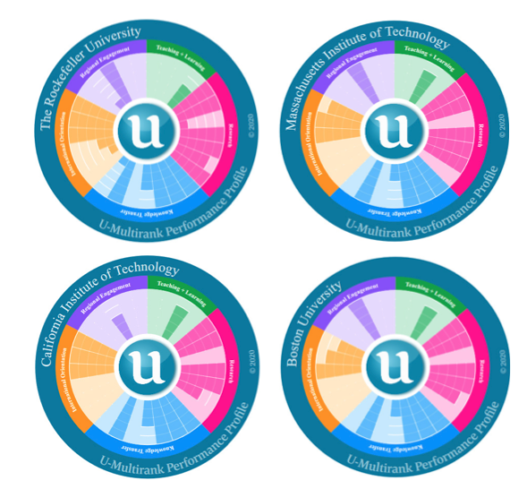

Introdução à Visualização de Dados#
Prof. Gustavo Oliveira
CI/DCC/UFPB
Características essenciais para o desenvolvimento de habilidades na disciplina:
Familiaridade com estatística;
Vontade de aprender coisas novas;
Curiosidade para descobrir respostas;
Apetite por princípios de design;
Disposição para aumentar seu rigor analítico e
Conhecimento técnico de pelo menos uma ferramenta para plotagem.
Pontos de equilíbrio#
É melhor aprender visualização de dados através de um guia ou manual, que discute princípios, conceitos e orientações, ou através de um tutorial, que contém exemplos de código e demonstrações de gráficos incríveis?
Devemos dissertar sobre as nuances artísticas, com toda a beleza do design, ou sobre a elegância simples e útil do cotidiano?
Faz sentido compreender conceitos teóricos da visualização de dados, ou ser apenas pragmático?
Vale seguir o exemplo dos livros pioneiros e clássicos históricos, ou avalizar o contemporâneo?
O que queremos com os dados: prover um arcabouço analítico de exploração e interatividade (visualização para análise), ou apenas comunicá-los a uma audiência para gerar impacto e atratividade (visualização para comunicação)?
Visão geral do curso#
Fundamentos: módulo dedicado ao estudo dos conceitos primários da visualização de dados, tais como seu desenvolvimento histórico, princípios, percepção, estética e cores.
Técnicas: módulo dedicado à discussão de técnicas diversas para representação visual de quantidades, proporções, tendências, redes e informações gerais, através de exemplos de códigos.
Aplicações: módulo dedicado à apresentação de ferramentas e plataformas modernas para construção de painéis analíticos (dashboards) e soluções de data reporting com tutoriais simplificados.
Arquitetura visual x engenharia visual#
Arquitetura visual: área profissional que cuida da especificação dos projetos de visualização de dados;
Engenharia visual: área que executa tais projetos.
Este curso abrange majoritariamente a segunda área.
Nota: as definições são do professor.
Definindo Visualização de Dados#
Neste curso, usaremo a seguinte definição, adaptada de Andy Kirk:
Visualização de dados é a arte de combinar representações visuais e apresentações para facilitar a compreensão dos dados.
Representação visual (chart) como elemento que melhor se adéqua ao que se pretende comunicar.
Charts têm marcadores e atributos como fundamentos
A apresentação visual concerne a todas as outras tomadas de decisão de design que constituem a anatomia da visualização:
seleção da paleta de cores;
composição da obra;
características das anotações.
Parcela artística do autor independe da ferramenta técnica.
A parte final da definição diz respeito à compreensão facilitada dos dados,
Processo de captura da mensagem lançada pelo contador de história (storyteller) ao espectador (viewer) em 3 etapas cognitivas:
Percepção (o que vejo?)
Interpretação (o que significa?)
Compreensão (o que significa para mim?)
As 3 fases da compreensão de uma representação visual#

Figuras feias, ruins e erradas#
Diferentes versões de figuras com a mesma representação visual subjacente podem existir.
feia é aquela que tem problemas estéticos, apesar de clara e informativa.
ruim é aquela que tem problemas relacionados à percepção, tais como obscuridade, confusão, complicações e enganação.
errada é aquela que tem problemas relacionados à matemática e é objetivamente incorreta.

Comparação de figuras:
A) adequada, sem problemas aparentes graves;
B) versão “feia”, tecnicamente correta, mas colorida inutilmente;
C) versão “ruim”, também tecnicamente correta, mas com marcações e gradeado destoantes;
D) versão “errada”, sem escala explícita e aparentemente díspar em quantidade.
Dataviz, o pensamento visual e o bom plot#
A visualização de dados (dataviz, de data visualization) é uma disciplina obrigatória para um novo modo de pensar: o pensamento visual
No mundo dos negócios, pensar visualmente é ser capaz de construir representações visuais com grande potencial atrativo.
Para empresas competitivas, a mensagem clara e acessível transmitida graficamente é uma das grandes vantagens de marketing.
Matriz da Boa Representação Visual#
Sugere que um plot considerado “bom” deve aproximar-se cada vez mais da quina superior direita, onde reside a perfeição.
{kind=link}
Princípios de Tufte#
apresentar dados;
induzir o espectador a pensar a substância da representação visual e não os métodos ou técnicas que a estruturaram;
evitar distorcer os dados;
apresentar muitos números em um espaço mínimo;
tornar grandes dados coerentes;
encorajar os olhos a compararem diferentes partes dos dados;
revelar os dados em vários níveis de detalhe, do mais amplo ao mais específico;
servir a um propósito claro: descrever, explorar, tabelar e decorar; e
estar estreitamente vinculada às descrições estatísticas e verbais dos dados.
Ver Edward Tufte
Alguns princípios fundamentais de Tufte incorporam todas as expectativas acima:
Integridade visual: a figura não deve, de forma alguma, distorcer ou criar falsas interpretações dos dados.
Regras para a integridade:
Dizer a verdade sobre os dados;
Mostrar a variação dos dados, não do design;
Tornar grandes conjuntos de dados coerentes;
Revelar dados em vários níveis de detalhe.
Exemplos de (falta de) integridade visual#
Número de camisas jersey de alguns jogadores vendidas (Fonte)

Problema: desproporcionalidade entre quantidade e comprimento das barras!
Solução: criar proporções corretas; eliminar imagem do CR7; criar escala
{kind=link}
Gráfico com legendas incompletas/incoerentes, desordenadas, sem título e sem clareza
{kind=link}
Gráfico com duas diferentes escalas/perspectivas de análise (confuso)
{kind=link}
Maximização da razão “tinta-dados”: para Tufte, o storyteller precisa atentar para a quantidade de elementos agregados em uma representação visual. A equação para o que Tufte chamou de razão “tinta-dados” (data-ink ratio), aqui denotada por \(\text{RTD}\) é:
onde \(d\), \(t\), e \(T\) denotam, nesta ordem, a quantidade de tinta usada para os dados, para os adereços e para ambos, no total. Maximizar a \(\text{RTD}\) implica em eliminar do visual aquilo que é inútil ou não essencial.
As leis de Tufte para a “tinta”:
Mostre os dados;
Maximize a RTD;
Remova elementos desnecessários;
Delete redundâncias;
Revise e edite.
Exemplo de maximização da RTD#
Calorias/100g para diferentes “junk foods” (Fonte)

Remove cores de background (figura e eixos), pois nada acrescentam
{kind=link}
Remove redundâncias (título; legenda; label X, label Y)

Remove bordas (adicionam apenas tinta e nenhuma informação)

Reduz cores (legendas sob barras indicam tipos; vermelho para destaque)

RTD maximizada, porém podemos otimizar ainda mais retirando efeitos 3D e sombras

Grade não auxilia tanto (podemos indicar valores exatos e removê-la, chegando a uma RV minimalista)
{kind=link}
Estética: a elegância visual só pode ser atingida ao se equilibrar a complexidade dos dados com a simplicidade do design.
A grade pode ajudar ou esconder


Escala desequilibrada

Distorção de baseline (fixe a baseline em zero, em RVs de barra!)
Gráficos a seguir possuem diferentes baselines.

Fator de Lie (\(L\))#
\(L\) = tamanho do efeito mostrado na RV / tamanho do efeito nos dados
Na figura abaixo, \(L =783/53=14.8\) (há 53% de aumento na economia de combustível, mas a linha de 27.5 aumentou 783%).
Desejável: \(L \approx 1.0\).

Exemplo de cálculo de \(L\)#
Suponha uma RV em que 20 unidades são representadas por 1 cm de comprimento visual e 30 unidades são representadas por 5 cm. Tem-se (mudança relativa):
tamanho do efeito no gráfico = (5 - 1)/1 = 4
tamanho do efeito nos dados = (30 - 20)/20 = 10/20 = 0.5
\(L = 4/0.5 = 8\)
Chartjunks#
RVs contaminadas por “elementos estranhos” que distraem o viewer da mensagem central.
Trazem extradimensionalidade, decoração excessiva e coloração não informativa

Ferramentas técnicas do curso#
Python 3.x como linguagem de programação básica
Diversidade de pacotes para construção de plotagens e utilidades.
Recomendação: ambiente virtual
conda
Criação do novo ambiente#
Execute o comando:
conda env create --file dataviz.yml
Habilite o ambiente:
conda activate dataviz
Exemplo aplicado#
Visualizando a variação do preço por litro, em R$, de 6 tipos de combustíveis comercializados no estado da Paraíba por 8 operadoras durante o primeiro semestre de 2022.
Para a plotagem, usamos parte do dataset correspondente disponibilizado pela ANP no portal Dados Abertos do Governo Federal.
Show code cell source
from pandas import read_csv
from matplotlib.pyplot import subplots
import seaborn as sns
# pandas
df = read_csv('../data/preco-combs-pb-2022-02.csv')
# matplotlib
fig, ax = subplots(figsize=(14,5))
ax.set_title('Preço de combustíveis - PB - Semestre 2022/01. Fonte: ANP')
ax.set_ylabel('litro (R$)')
# seaborn
sns.set_style("whitegrid")
g = sns.boxplot(data=df, x="Bandeira", y="Valor de Venda",
hue='Produto',palette="deep",ax = ax)
sns.move_legend(g, "upper center", title='', ncol=1,
frameon=True, bbox_to_anchor=(1.11, .8))
sns.despine(offset=5,trim=True)
sns.set_style()
Terminologias#
Termos para pessoas#
Storyteller: você, que está construindo o produto de visualização (cf. visualiser, analyst,visualist, designer).
Viewer: a pessoa que visualiza o produto construído (cf. consumer, reader, user).
Audiência: um grupo de espectadores ou coorte social a quem o produto de visualização é direcionado (cf. audience).
Termos para dados#
Dado bruto: estado inicial de um dado coletado, recebido ou baixado de um repositório ainda não tratado ou sujeito a análises (cf. raw data).
Fonte: origem do dado bruto utilizado para a visualização (cf. data source).
Dataset: uma tabela ou coleção de tabelas dispostas como um array computacional e organizadas em linhas (registros, instâncias ou itens) e colunas (variáveis, detalhes dos itens).
Tipo: a especificação de uma variável de tabela. Geralmente, um dado é ordinal (obedece a uma relação de ordem), numérico (manipulável por operações aritméticas) ou categórico (identificado por um atributo que o difere de outro).
Série: sequência de valores assumidos por uma mesma variável em um dataset.
Termos para visualização#
Projeto de visualização: conjunto de etapas progressivas que culminam na geração de um produto de visualização.
Produto de visualização: entregável de um projeto de visualização. Em geral, será uma representação visual de dados.
Representação visual de dados: termo genérico que abrange as diversas formas de disposição visual de dados, que chamaremos de plot. Um plot pode ser um traçado representativo de uma quantitidade matemática univariada (gráfico), ou a aplicação de figuras geométricas planas ou espaciais, ou ainda a impressão de formas e símbolos para fins quantitativos ou qualitativos em várias dimensões. Assim, plots incorporarão diagramas, fluxogramas, dendrogramas, superfícies, dispersões, correlações, mapas etc.
Outlier: valores em uma representação visual que escapam do intervalo normal e chamam atenção do espectador por serem ou muito menores ou muito maiores do que o esperado.
Representações visuais para análise#
Indústria global da música#

Uso da terra para bioplásticos (2017-2022)#

Ranqueamento universitário (2020)#
{kind=link}
Tipologia biofísica do mangue na América do Norte, Central e Caribe#

Potencial de soluções baseadas em carbono azul#

Uso de navegadores para internet#

Corrida por usuários de serviços remotos#

{kind=link}
{kind=link}
{kind=link}